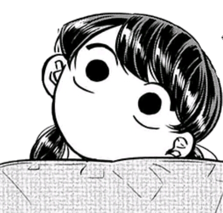

El manga
Ahhhhh... el manga la esencia principal del anime el deleite blanqui-negro con el quee han comenzados grandes artistas... basicamente... una serie de dibujos dialogos y viñetas que dan vida a una obra literaria que puede encantar, asustar, alegrar, entristecer y maravillar a miles de personas.
No solo por el hecho de que me guste todo el mundo relacionado con el dibujo hace que me guste el manga sino que tambien hay veces en que un anime termina y este ya no sigue la animacion y hay que mudarse al manga o simplemente avanza tan lento que te quedas con ganas de mas y no qued de otra mas que leer el manuscrito original xd... en fin los manga que por lo general leo son los mismos de mis animes favoritos a excepcion de unos cuantos que talvez tengan anime, pero ten por seguro que algunos no superan al manga...
puchale a la mudita para ver los mangos que sigo
